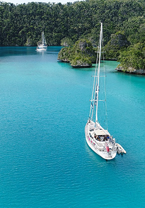
Outer Islands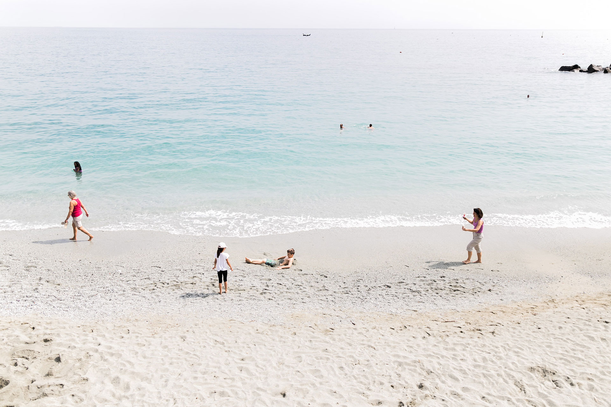
Official Archipelago & Global Expedition Desk
17°42'S 178°03'E
Where the South Pacific meets uncharted horizon.
Private lagoon charters across 333 volcanic islands.
We architect private island stays, inter-island seaplane transfers, and conservation-led reef voyages across the Fiji Archipelago and fourteen signature global destinations.
333 Islands
Surveyed across 94 private atolls & reefs
27.8°C Mean
Year-round lagoon surface temperature
42 Dive Sites
Protected soft-coral passages in Somosomo & Beqa
100% Verified
Direct local resort & seaplane charter rates
01. Archipelago Geography · The Friendly Fiji Islands
Seven distinct island regions, each with its own tide and terrain.
Select any region below to inspect transfer logistics, seasonal conditions, and signature marine or rainforest experiences.
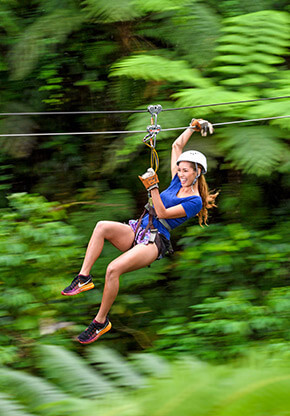
Pacific Harbour & Beqa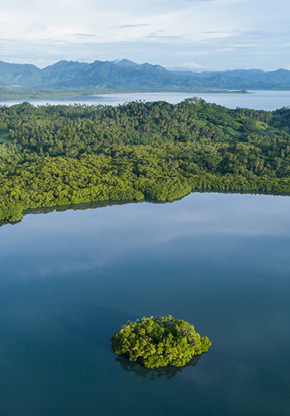
Savusavu & Surrounds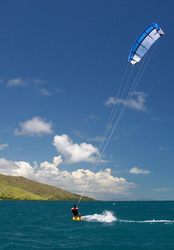
Suncoast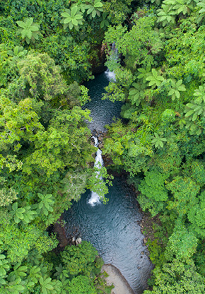
Taveuni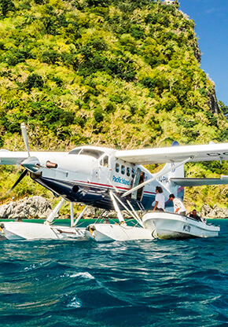
Yasawa Islands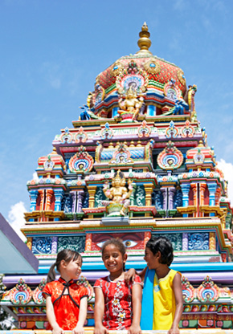
Nadi & Denarau02. Bespoke Itineraries · Transparent All-Inclusive Pricing
Curated island charters & international extensions.
Switch between 7-night and 10-night durations to compare verified rates including private transfers, accommodation, and guided field excursions.
03. Visual Field Archive · Coral, Canopy & Thermal Springs
Moments captured across the archipelago.
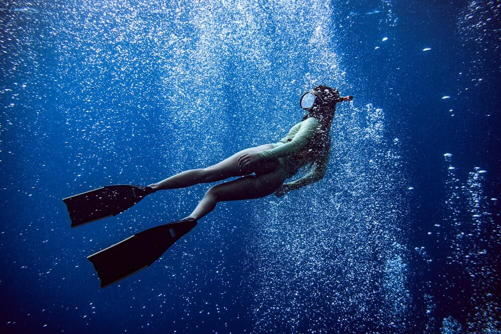
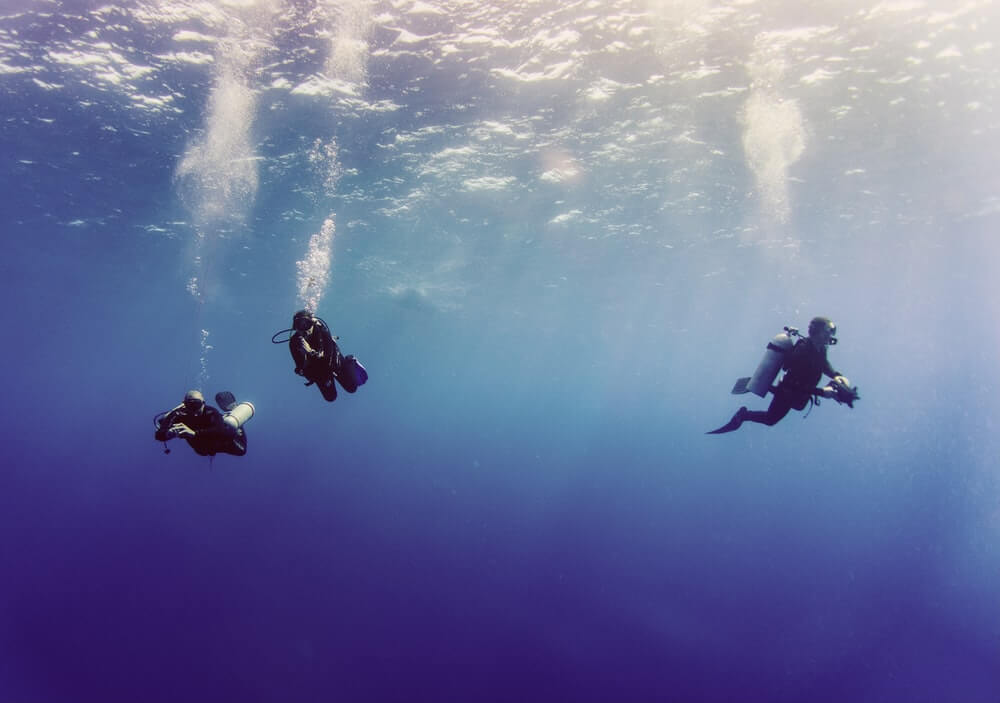
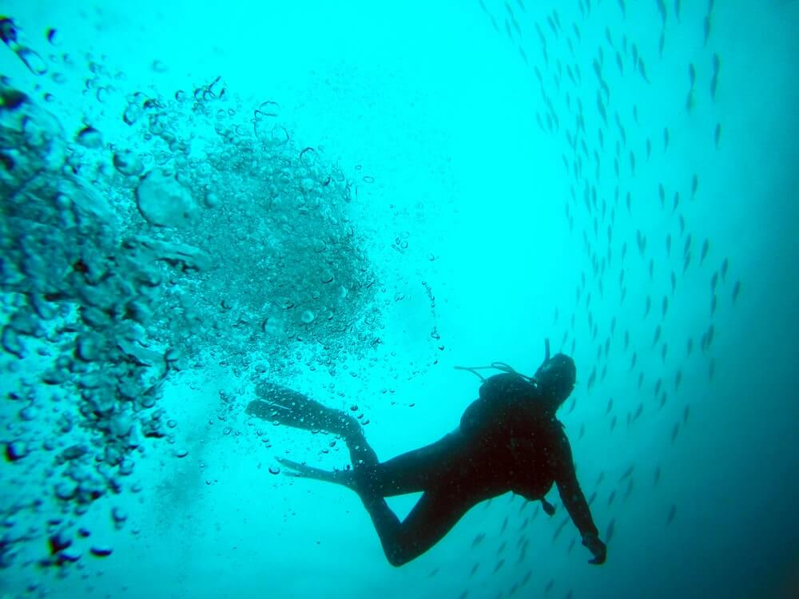
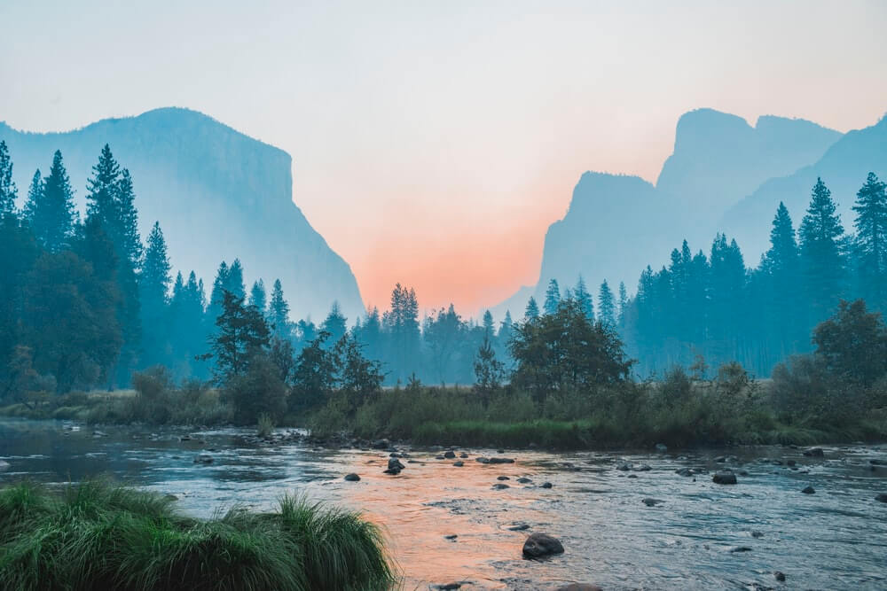
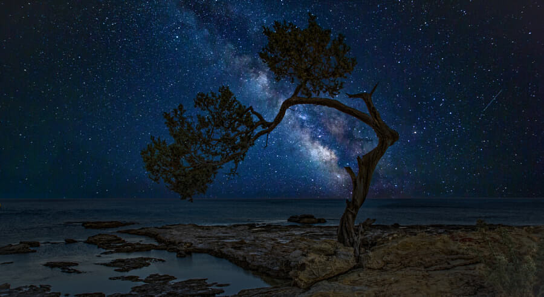
04. Stopover Hubs & Expedition Craft
Start planning your dream multi-continent holiday.
Pair your South Pacific voyage with a curated 4-night architectural or coastal stopover. Click any gateway below to load its itinerary into the booking concierge.
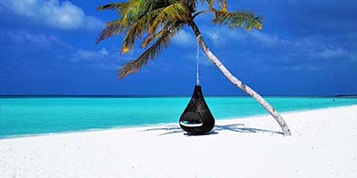
Thailand · Southeast Asia
Bangkok
13°45'N 100°30'E · From $1,480
Italy · Mediterranean
Rome
41°54'N 12°29'E · From $1,890
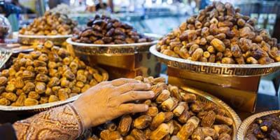
Egypt · North Africa
Cairo
30°02'N 31°14'E · From $1,620
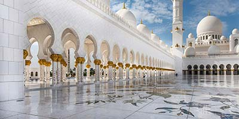
United Arab Emirates · Gulf
Dubai
25°12'N 55°16'E · From $1,950
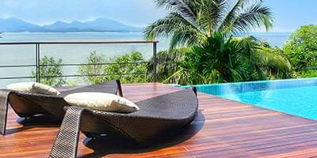
Bahamas · Atlantic Cays
Nassau
25°04'N 77°20'E · From $2,120
01. Aviation & Maritime Logistics
Direct Amphibious Seaplane & Private Yacht Routing
Skip multi-hour ferry queues at Denarau. We coordinate customs clearance in Nadi with direct twin-engine seaplane water landings and private catamaran charters straight to your outer-island jetty.
02. Marine Science Access
Reef Biologist Field Guides
Every Taveuni and Yasawa charter includes private briefings and coral restoration dives alongside resident marine naturalists.
03. Culinary & Village Protocol
Authentic Sevusevu & Coastal Dining
Respectful village introductions guided by local elders, paired with line-caught Kokoda and earth-oven Lovo feasts.
04. Weather-Adaptive Concierge
24/7 Trade-Wind & Swell Itinerary Protection
Our Nadi operations desk monitors South Pacific barometric shifts daily, proactively adjusting dive moorings, helicopter transfers, and inter-island crossings at zero administrative fee.
Next South Pacific Charter Release
Outer-island bures in the Yasawa and Lau groups are capped at 14 villas per island. Lock in direct charter pricing before the current allocation closes:
14
Days
23
Hours
59
Minutes
59
Seconds
"Before working with the Nadi desk, we struggled to connect Taveuni's Rainbow Reef with a remote Yasawa atoll in a single 10-day window. Their private floatplane routing saved us two full transit days and placed us on the reef at slack tide every morning."
05. Reservation & Custom Charter Desk
Configure Your Voyage
Complete your itinerary parameters below for an instant cost estimate and confirmed reservation dossier.
06. Field Notes & Island Dispatches
Seasonal briefings from our marine & overland guides.
Practical routing intelligence, reef conservation updates, and cultural etiquette for travelers bound for Fiji and our global partner hubs.
Navigating the Lunar Tides of the Somosomo Strait
Why timing your Taveuni dive charter around the waning quarter moon reveals the Great White Wall at peak soft-coral expansion.
Village Etiquette & The Art of the Sevusevu Ceremony
What to bring, how to dress, and how kava root presentations open doors to community-owned waterfalls in Vanua Levu.
Pairing Pacific Crossings with a 72-Hour Bangkok River Stopover
How travelers routing from Europe and Asia break up long-haul flights with private rice-barge dining along the Chao Phraya.
Private Dahabiya Sailing Between Luxor and Aswan
Trading large river cruisers for twin-masted wind-powered vessels that moor at quiet sandstone quarries and temple islands.